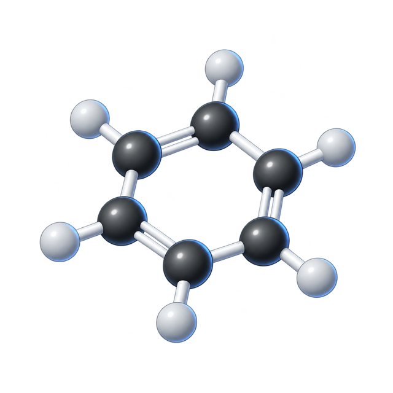

Predictive quantum chemistry

Quantum mechanics determines how atoms bond, react, absorb light, and form new molecules and materials. We build more reliable computational methods for predictive computations in cases that standard approaches cannot describe.